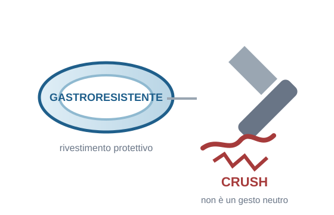

Dal numero di farmaci all’appropriatezza della cura
Alberto Zucchelli
SIGG Lombardia 2026
farmaci per residente
residenti con ≥5 farmaci
residenti con ≥10 farmaci
Prescription Day LTCFs 2024: 3.400 residenti, 82 strutture italiane.
Malara et al. Aging Clin Exp Res 2025;37:291.
| Caratteristica dei residenti | Stima |
|---|---|
| Età media | 84,7 anni |
| Fragilità severa | 49,7% |
| Diagnosi di demenza | 48,2% |
| ≥1 ADL compromessa | 96,2% |
| Disfagia | 15,5% |
Politerapia ≠ inappropriatezza. Il numero di farmaci è un marker di complessità.
Prescription Day LTCFs 2024.
| Esposizione | Residenti |
|---|---|
| ≥1 DDI potenzialmente clinicamente rilevante | 42,2% |
| ≥3 farmaci ad azione centrale | 33,2% |
| ≥2 farmaci anticolinergici | 7,1% |
| SSRI + altro farmaco serotoninergico | 4,1% |
| ≥2 farmaci potassium-sparing | 3,5% |
Il rischio non è solo nel conteggio, ma nelle combinazioni, nel burden cumulativo e nel contesto clinico.
Malara et al. J Gerontol A 2026; Anrys et al. JAMDA 2021.
| Passaggio | Dato Prescription Day |
|---|---|
| Prescrizioni orali analizzate | 20.290 |
| Forme solide orali modificate | 4.655 |
| Modificazioni inappropriate / likely inappropriate | 38,7% |
| Residenti con ≥1 modificazione potenzialmente inappropriata | 31,7% |
La somministrabilità è parte dell’appropriatezza terapeutica.
Prescription Day LTCFs — analisi SODF.

Triturare una compressa o aprire una capsula può modificare:
La formulazione fa parte della prescrizione.
Blaszczyk et al. Drugs Aging 2023; SODF Prescription Day analysis.
| Fonte / strumento | Utilità pratica |
|---|---|
| SIFO | informazioni su formulazioni disponibili in Italia |
| Do Not Crush lists | identificazione di formulazioni non manipolabili |
| FVG / ISMP-derived list | standard operativo già adottato in alcuni contesti |
| TRC Do Not Crush Update 2025 | aggiornamento internazionale recente |
| SmPC / RCP | riferimento regolatorio sul prodotto specifico |
| Farmacista / farmacologo | risoluzione dei casi dubbi |
Esempio: pantoprazolo gastroresistente. Non è solo la molecola: è la formulazione.
| Esito possibile della review | Significato |
|---|---|
| Continue | mantenere una terapia appropriata |
| Start | correggere una omissione terapeutica rilevante |
| Adjust | modificare dose, formulazione, via o timing |
| Monitor | controllare parametri, eventi avversi, efficacia |
| Stop | deprescribing di farmaci non più appropriati |
Obiettivo: appropriatezza della terapia. Non il minor numero possibile di farmaci.
Systematic review e meta-analisi: 38 studi, 22 RCT.
| Outcome prescrittivo | Effetto pooled |
|---|---|
| Farmaci / residente, <12 mesi | −0,89 |
| Farmaci / residente, ≥12 mesi | −1,60 |
| PIM / residente, 6 mesi | −0,48 |
| PIM / residente, ≥12 mesi | −0,26 |
La review riduce numero di farmaci e PIM. È un risultato rilevante, ma è un outcome prescrittivo.
Carollo et al. Age Ageing 2026;55:afag084.
| Outcome clinico | Risultato pooled |
|---|---|
| Cadute, 3–6 mesi | RR 1,02 (0,85–1,23) |
| Ricoveri, 3–6 mesi | RR 1,00 (0,81–1,23) |
| Mortalità, 1–6 mesi | RR 1,01 (0,90–1,13) |
Non c’è evidenza robusta e consistente che medication review/deprescribing, da soli, riducano cadute, ricoveri o mortalità.
Carollo et al. Age Ageing 2026;55:afag084; Holland et al. BMJ 2023;380:e071883.
| Livello | Relazione con la medication review |
|---|---|
| Appropriatezza prescrittiva | effetto diretto |
| Burden farmacologico / esposizione al rischio | effetto intermedio |
| ADE, sintomi, funzione | effetto plausibile ma meno diretto |
| Cadute, ricoveri, mortalità | outcome distali e multifattoriali |
Gli hard outcomes dipendono anche da fragilità, malattie acute, ambiente, assistenza, nutrizione, riabilitazione e organizzazione della struttura.
| Confronto ChatGPT-4 Turbo vs 51 review cliniche | Risultato |
|---|---|
| Concordanza con team clinico | 27,7% |
| Interventi validi aggiuntivi | 19 |
| Interventi errati | 84 |
| Correttezza diagnosi ↔︎ farmaco | 86,4% |
Uso potenziale: screening, riconciliazione, DDI/PIM, lista di problemi da verificare.
Limite: non definisce obiettivi di cura, prognosi, preferenze e priorità cliniche.
Hoope et al. J Am Geriatr Soc 2026; Alpay et al. BMC Geriatr 2026.
| Passaggio | Domanda clinica |
|---|---|
| VMD + obiettivi | Qual è il contesto della persona? |
| Medication review | Quali problemi farmacologici sono presenti? |
| Decisione | Continuare, iniziare, modificare, monitorare o sospendere? |
| Somministrazione | La terapia è concretamente somministrabile? |
| Monitoraggio | Che cosa va rivalutato e quando? |
La revisione terapeutica deve essere longitudinale, multidisciplinare e coerente con il piano di cura.
Politerapia ≠ inappropriatezza. Il numero di farmaci segnala complessità.
Medication review e deprescribing migliorano soprattutto la qualità prescrittiva. Non devono essere presentati come interventi isolati per ridurre mortalità, ricoveri o cadute.
Appropriatezza = prescrizione + formulazione + somministrazione + contesto. AI e strumenti digitali possono supportare; la decisione resta clinica e multidisciplinare.